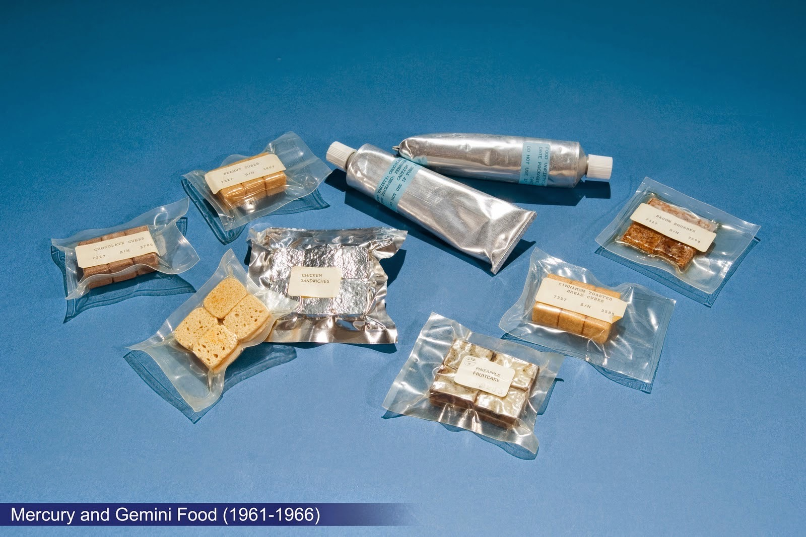

• Il cibo spaziale è una varietà di prodotti alimentari appositamente creati e trasformati per essere consumati dagli astronauti nello spazio.
• I pacchetti che contengono il cibo hanno impugnature in gomma all'interno per tenerli il cibo galleggia.
• Il vassoio in metallo per alimenti è solitamente legato a un oggetto per impedirne il galleggiamento; i liquidi sono conservati in tubi o cartoni.
• Il cibo ha requisiti specifici per fornire un'alimentazione equilibrata agli astronauti.
MICROGRAVITÀ
• Il veicolo spaziale e tutto il suo contenuto sono in uno stato di caduta libera
• Briciole e liquidi possono danneggiare l'apparecchiatura o essere inalati.
•Per bere i liquidi vengono utilizzate speciali cannucce pieghevoli.
• La microgravità fa galleggiare via gli utensili.
• Coltello, forchetta, cucchiaio e forbici sono fissati sul vassoio in metallo per alimenti con magneti quando non vengono utilizzati.
TIPI DI CIBI
• Cibi freschi
• Reidratabile
• Forma naturale
• Umidità intermedia (come essiccata frutta)
• Alimenti termostabilizzati (si tratta di alimenti trattati termicamente che distruggono i microrganismi dannosi e gli enzimi)
• Alimenti irradiati (questo è il processo di esposizione di alimenti e imballaggi alimentari a radiazioni ionizzanti, ad esempio da raggi gamma, raggi X o fasci di elettroni)
• Alimenti surgelati
• Alimenti refrigerati
NUTRIZIONE
• Assumere abbastanza calorie
• Vitamine e minerali.
• Stessi nutrienti del cibo sulla Terra ma le quantità di alcuni differiscono.
• Ferro - 10 milligrammi al giorno.
• Il sodio è limitato perché troppo può portare alla perdita ossea e ad altri problemi di salute.
CONFEZIONAMENTO
1) CIBI A GRANDEZZA NATURALE
• Confezionamento in Atmosfera.
• Ogni confezione viene lavata con azoto tre volte prima del sottovuoto finale.
• La quantità di sottovuovo utilizzato varia a seconda del prodotto alimentare.
2) PACHETTI REIDRATIBILI
• Confezionati a forma di tazza e coperchio
• Sono realizzati in un materiale flessibile per favorire la compressione dei rifiuti.
• I setti sono realizzati in gomma siliconica.
• L'acqua viene iniettata nel cibo.
PORTATA FUTURA
• La NASA prevede di coltivare frutta e verdura in fattorie spaziali e serre a temperatura controllata e illuminate artificialmente.
• Sistema idroponico (coltivazione di piante senza utilizzo del suolo)
• Le colture possono includere soia, arachidi, spinaci, cavoli, lattuga e riso.
• I frumenti ei semi di soia possono essere coltivati e trasformati in pasta o pane.
PROJECT: MERCURY (1959-1963)
Project: Mercury (un progetto degli anni 60) era la prima missione spaziale di cui gli astronauti hanno portato il cibo. I primi cibi spaziali non erano molto appetitosi. Erano semiliquidi che sono stati spremuti in tubi che bisogna mangiare con una cannuccia.Esistevano anche piccoli cubi di cibi compressi e disidratati che sono stati reidratati dalle bocche degli astronauti.
PROJECT: GEMINI (1965-1966)
Su Project: Gemini, il cibo era migliore. Questa volta gli astronauti hanno portato con sé cibi liofilizzati, bevande all'uva e all'arancia, cubetti di cioccolato, bocconcini di tacchino, salsa di mele, stufato di manzo e altro ancora.

PROJECT: APOLLO (1968-1975)
Project: Apollo è stata la prima missione spaziale che ha utilizzato l'acqua calda per reidratare il cibo. Fu anche la prima missione spaziale in cui gli astronauti usarono i cucchiai. L'umidità del cibo faceva aggrappare il cucchiaio anziché fluttuare via.
SKYLAB (1973-1974)
Skylab è stata la prima stazione spaziale degli Stati Uniti. Aveva una sala da pranzo in cui gli astronauti potevano sedersi e mangiare. C'erano 72 voci nel menu in totale. I vassoi per il cibo sono stati progettati in modo da poter riscaldare il cibo. Gli alimenti consistevano in prodotti come prosciutto, peperoncino, purè di patate, gelato e bistecca.
SPACE SHUTTLE PROGRAM (1972-2011)
Il cibo sulla prima navetta spaziale negli anni '80 sembrava quasi identico a quello che veniva mangiato sulla Terra. Gli astronauti hanno progettato i propri menu di sette giorni selezionati tra 74 cibi diversi e 20 bevande. Preparavano i pasti in una cambusa con distributore d'acqua e forno.